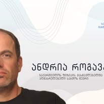

ანდრია როგავა – თეორიული ფიზიკოსი და ასოციაციის დამფუძნებელი წევრი
ანდრია როგავა - საქართველოს ფიზიკის მასწავლებელთა ასოციაციის დამფუძნებელი და აღმასრულებელი საბჭოს წევრი. 1981 წელს ოქროს მედალზე დაამთავრა თბილისის პირველი ექსპერიმენტული სკოლა. 1986 წელს წარმატებით დაამთავრა თბილისის სახელმწიფო უნივერსიტეტი თეორიული ფიზიკის სპეციალობით, სწავლა განაგრძო მეცნიერებათა აკადემიის აბასთუმნის ასტროფიზიკურ ობსერვატორიის ასპირანტურაში და 1990 წელს დაიცვა დისერტაცია თემაზე: „ფიზიკური პროცესები შავი ხვრელის აკრეციული დისკის შიდა არეში“.
1990-2010 წლებში მუშაობდა აბასთუმნის ასტროფიზიკურ ობსერვატორიის თეორიული ასტროფიზიკის განყოფილებაში. 2002 წელს მიენიჭა საქართველოს რესპუბლიკის სახელმწიფო პრემია ფიზიკის დარგში.
1990-1997 წლებში ასწავლიდა თსუ ფიზიკის ფაკულტეტზე თეორიულ ასტროფიზიკას და ველის თეორიას; 1995-2009 წლებში თანამშრომლობდა თეორიული ფიზიკის საერთაშორისო ცენტრთან (ტრიესტი, იტალია) როგორც პლაზმის ფიზიკის ჯგუფის მკვლევარი და ცენტრის ასოცირებული წევრი.
1998-2020 წლებში ლუვენის კათოლიკური უნივერსიტეტის პლაზმური ასტროფიზიკის ცენტრში მუშაობდა მკვლევრად და მოწვეულ პროფესორად. 2009 წლიდან ასწავლის ილიას უნივერსიტეტში (2023 წლიდან – პროფესორი), 2017 წლიდან – თეორიული ფიზიკის ინსტიტუტის დირექტორია. 2013 წლიდან ასწავლის თბილისის თავისუფალ უნივერსიტეტშიც.
არის მომავალ ფიზიკოსთა ყოველწლიური ფესტივალის ერთ-ერთი დამაარსებელი, „ასტრონომიული კალენდრის» რედკოლეგიის წევრი. ავტორია ოთხმოცზე მეტი სამეცნიერო პუბლიკაციისა, მისი შრომების ციტირებათა რაოდენობა ათასს აღემატება.